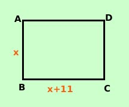

|
L'area di un rettangolo vale 80 cm2 Determinare le dimensioni del rettangolo sapendo che la differenza fra la base e l'altezza e' 11 cm  Costruiamo prima la figura e scriviamo per esteso tutte le relazioni che abbiamo L'area vale 80 cm2 lo traduco come BC · AB = 80cm2__ __ La differenza fra la base e l'altezza e' 11 cm la traduco come BC - AB = 11 cm __ __ Potremmo farlo con un sistema sostituendo x ed y alle grandezze incognite; facciamolo con una sola incognita: se la differenza fra la base e l'altezza vale 11 allora la base e' 11 cm piu' dell'altezza Nella seconda relazione porto AB dall'altra parte dell'uguale BC = AB + 11 cm __ __ Pongo AB = x __ BC = x + 11 __ sostituisco nella relazione dell'area ed ottengo l'equazione risolvente (x + 11) · x = 80 x2 + 11x = 80 x2 + 11x - 80 = 0 Risolvo l'equazione di secondo grado ed ottengo Calcoli x1 = -16 x2 = + 5 Siccome devo trovare la misura x dell'altezza accetto solo la radice positiva (non esistono segmenti negativi) x = + 5 AB = 5 cm __ BC = x + 11 = 16 cm __ |